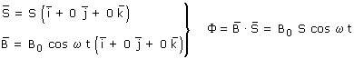
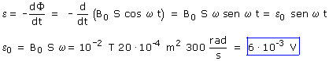

b)  Conocemos la expresión del flujo en función del tiempo, por tanto calculamos la f.e.m instantánea:  Observa que la f.em. varia armónicamente entre +6 mV y -6 mV lo que significa que la corriente inducida no circulará en el mismo sentido sino que lo irá alternando (Corriente alterna) |